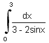
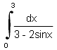
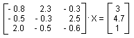

Numericka matematika
feb. '98.
asistent: Milan Drazic
1. Funkciju f(x) = lnx cos2x tabelirati na intervalu [1, 3.7] sa korakom 0.3 sa 5 decimala. Zatim, koristeci konacne razlike zakljucno sa IV redom, naci obe koordinate minimuma ove funkcije.
2. Izracunati sa tacnoscu :

:

3. Zajdelovom iterativnom metodom resiti sistem, racunajuci sa 5 decimala.

4. Metodom proste iteracije sa tacnoscu  naci
prva dva pozitivna resenja jednacine: x + tg x = 0.
naci
prva dva pozitivna resenja jednacine: x + tg x = 0.